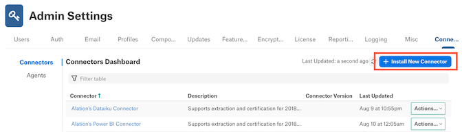
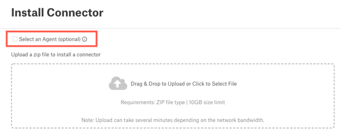
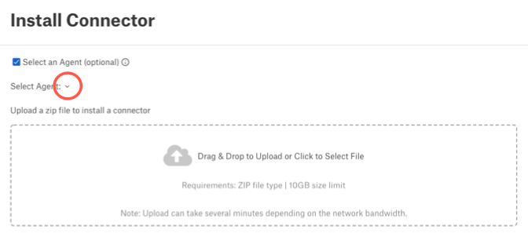
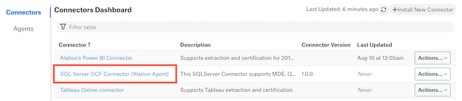
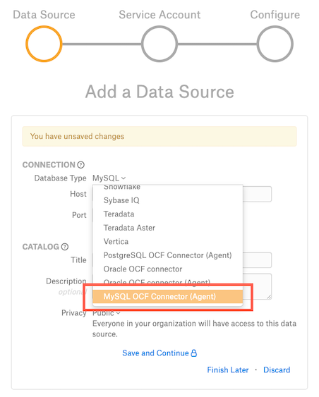

Connect the Agent to Data Sources¶
Alation Cloud Service Applies to Alation Cloud Service instances of Alation
To connect to a data source with the Alation Agent (Agent), you must first install the appropriate OCF connector on the Agent. To obtain an OCF connector, open a support ticket with Alation to request the specific OCF connectors you need.
Important
The Agent only works with connectors based on the Open Connector Framework (OCF).
The Agent only supports RDBMS and BI connectors.
Once you’ve installed the right connector, you can add the data source.
Install a Connector on the Agent¶
You must be a Server Admin to install the connector. Each connector is installed in its own container on the Agent machine.
To install a connector on the Agent:
Get the appropriate OCF connector from Alation support. The connector will be provided as a Zip file.
In Alation, click on the Settings gear icon in the top right corner. This opens the Admin Settings page.
Under the Server Admin section, click Manage Connectors.
Click the Install New Connector button on the Connectors Dashboard page.
Select the Select an Agent checkbox.
Click the arrow next to Select Agent, then select the name of the Agent.
Drag and drop the connector Zip file into the designated area, or click in the area to select the file from your system.
Note
The installation may take several minutes. When it’s done, a success message will appear.
Note
If you get an error, see the Troubleshooting page.
When the installation is complete, click the Close button.
The list of connectors will refresh. After a moment, your new connector will appear in the list. The Agent’s name will be added to the end of the connector name.

Connect to a Data Source through the Agent¶
Once you’ve installed the right connector on the Agent, you can connect to an on-premise data source from Alation through your Agent.
The process of adding an on-premise data source through the Agent is almost the same as adding any other data source. The difference is that when choosing the Database Type, you must choose an OCF connector that shows the Agent’s name in parentheses.
The pattern for OCF connector names is “<Data Source> OCF Connector (Agent Name).” For example, if you wanted to connect to a MySQL data source on an agent named “Agent,” you would select “MySQL OCF Connector (Agent)” for the Database Type. The connector will have the same name that appears in the Connectors Dashboard.
Once you select the Database Type, the dialog will close and take you to the Datasource Settings page. There you can enter the connection information for your on-premise data source.
Once you have connected to the data source, you can run metadata extraction, query log ingestion, sampling, and profiling.
Compose Compatibility with the Agent
In order to use Compose with the Alation Agent, you must:
Be on Alation Cloud Service version 2022.4 or later.
Have Alation Agent version 1.2.1.868 or newer installed. Agent version 1.2.0.815 does not support Compose.
Have a supporting version of the relevant connector installed on the Agent. See the documentation for individual OCF connectors to find out if a particular connector can connect to Compose through the Alation Agent.